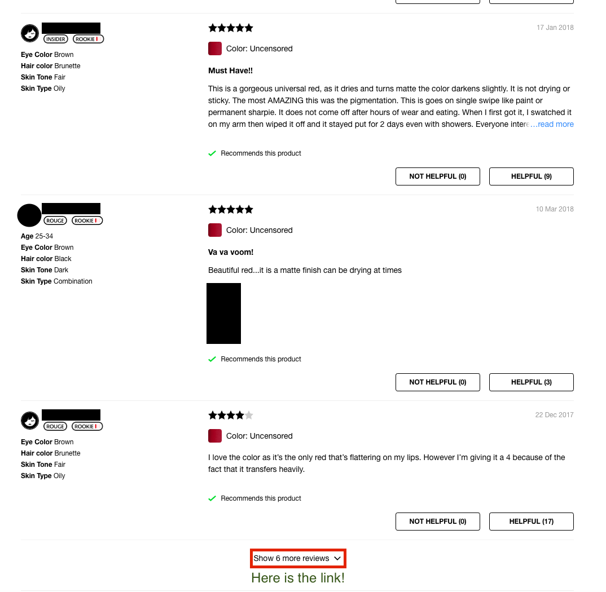
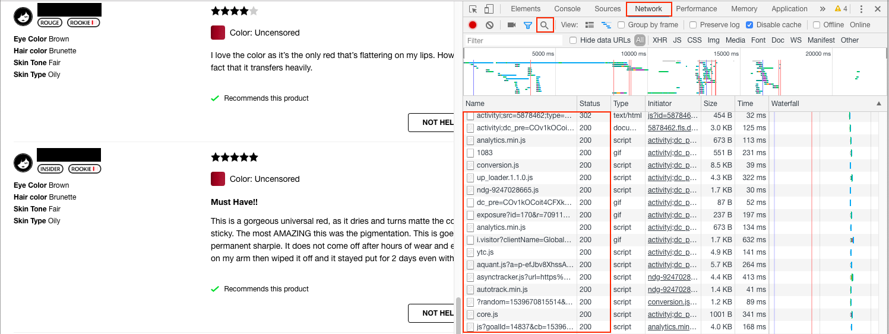
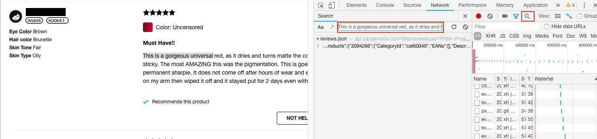
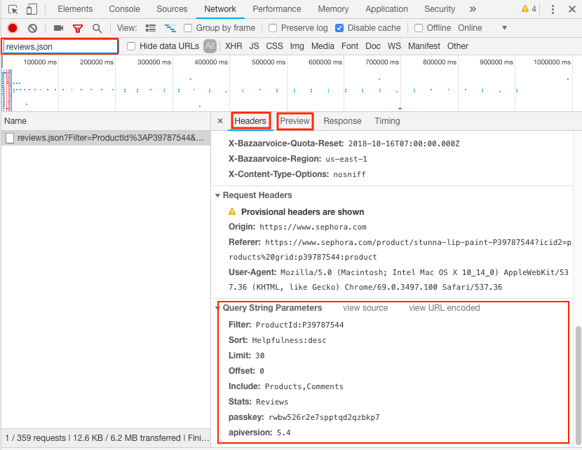
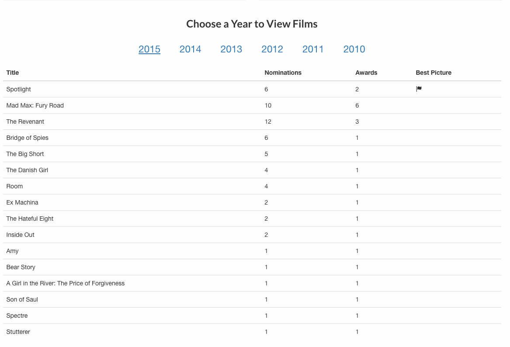
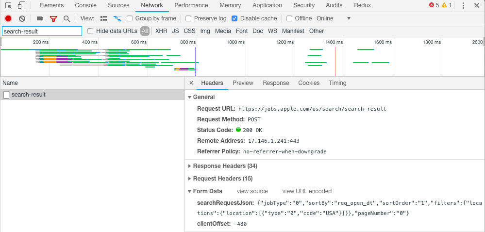

This post is part 2 of the "Advanced Scraping" series:
In the first article in this series, we looked at the two standard ways of scraping sites:
- Using a parser such as BeautifulSoup for static sites
- Using Selenium to execute Javascript on a dynamic site. Once Javascript has rendered the site, use a parser to extract the information.
On many websites, the Javascript executed by the browser makes requests from another server to get the information and process into HTML. In this installment, we investigate how to discover these network calls using Chrome's Network Panel in the Developer Tools.
We will look at three examples:
- Getting customer reviews of lipsticks from Sephora
- A mock site
- Getting a list of job openings at Apple
Sephora lipstick reviews
One of my students at Metis did a project where she clustered Sephora lipsticks by similarity, using not only the features claimed by Sephora, but also the reviews of the different lipsticks. To do this, she had to scrape the reviews from the individual lipsticks sold.
Here is an example of a typical lipstick page. If you visit that page, you may note that there is a link "Show 6 more reviews" at the bottom of the page that allows us to (slowly) make our way through the review. Here is a screen shot including a review:

Investigating the "link", we see that it is actually a button (operated by Javascript). We want to find a way of getting the reviews without having to start Selenium.
Open the Network tab
Open the page for this lipstick in Chrome. You can access this from the menu bar: View -> Developer -> Developer Tools. This will open the Developer tools on the right. Now click "Network" on the top.

You should see a list of files that have been downloaded by this page (shown in the box under "Name"). If there is nothing there, refresh the page.
Using the Network tab
The network panel shows the different files downloaded by the browser when opening the page. For example, if you include an image tag <img src="some_image.png"/> in your HTML, the browser has to download some_image.png. Then some_image.png will be recorded in the Network panel.
We are interested in whether we can find the reviews as something the page downloaded. Let's take some text from a review, and search for objects that have been downloaded with this string in it. Click on the magnifying glass (boxed in red), and copy the text "This is a gorgeous universal red, as it dries and turns matte" from one of the reviews into the search box:

We see reviews.json contains the review text we are looking for. We can search for the review.json request using the other search box in the Network tab

Looking at the header (at the top, not shown) we see the URL used to get review.json is
https://api.bazaarvoice.com/data/reviews.json?Filter=ProductId%3AP39787544&Sort=Helpfulness%3Adesc&Limit=30&Offset=0&Include=Products%2CComments&Stats=Reviews&passkey=rwbw526r2e7spptqd2qzbkp7&apiversion=5.4
This URL is a long and ugly, and has encoded parts (e.g. Sort=Helpfulness%3Adesc, where %3A is the HTML encoding for the standard colon). If we scroll to the bottom, we can find the query string parameters formatted nicely. We can put these in a standard Python dictionary:
# These are the parameters used to get the first 30 reviews
params = {
'Filter': 'ProductId:P39787544',
'Sort': 'Helpfulness:desc',
'Limit': 30,
'Offset': 0,
'Include': 'Products,Comments',
'Stats': 'Reviews',
'passkey': 'rwbw526r2e7spptqd2qzbkp7',
'apiversion': 5.4
}
We can also see the object returned from this request by looking at the Preview menu (located next to Header). We see that a JSON object is returned (in Python, this will be a dictionary). The reviews are held as a list of dictionaries in the field Results. Only the first 30 reviews are included (as determined by offset and limit). Notice that the total number of reviews is also stored in the field TotalResults.
The python code to get all the reviews
Here is the code for getting all the data about the reviews for this lipstick:
import requests
import time
url = 'https://api.bazaarvoice.com/data/reviews.json'
params = {
'Filter': 'ProductId:P39787544',
'Sort': 'Helpfulness:desc',
'Limit': 30,
'Offset': 0,
'Include': 'Products,Comments',
'Stats': 'Reviews',
'passkey': 'rwbw526r2e7spptqd2qzbkp7',
'apiversion': 5.4
}
reviews = []
loop = 0
while True:
params['Offset'] = len(reviews)
# Make the same request that Javascript makes
r = requests.get(url, params=params)
# break if we have an error or have all the reviews
if (r.status_code != 200) or (len(reviews) >= r.json()['TotalResults']):
break
# add the list of results to current results
reviews.extend(r.json()['Results'])
# Give a pause, so we don't get blocked
time.sleep(0.5)
# Show how many reviews we scraped
print(len(reviews))
This script downloaded all the reviews (including star ratings, user names, skin color of reviewer, review text, ...) in about 1 minute and 48 seconds. The JSON objects I received back would be ready for me to store directly into MongoDB for later processing.
A mock site
One problem with writing tutorials using company websites is that websites change. Frequently. The site https://scapethissite.com/ is setup to help you hone your scraping skills. We will look at the AJAX loading site https://scrapethissite.com/pages/ajax-javascript/#2015. Our goal is to grab the table of Oscar winning movies.

Here are our steps:
- Open the network panel
- Search for
'Spotlight'(the name of the best picture, unlikely to appear other places in the site). - Find that the request is in
scrapethissite.com/pages/ajax-javascript/?ajax=true&year=2015 - Search for the script named
?ajax=true&year=2015. This is tricky to find! Look at the response, and see that we have the JSON object we want.
Now we are ready to put together our script:
import requests
import pprint
url = 'https://scrapethissite.com/pages/ajax-javascript/'
params = {'ajax': 'true', 'year': 2015} # Note - use string 'true', not Python's True
r = requests.get(url, params=params)
pprint.pprint(r.json())
This returns
[{'awards': 2, 'best_picture': True,'nominations': 6, 'title': 'Spotlight ','year': 2015},
{'awards': 6, 'nominations': 10, 'title': 'Mad Max: Fury Road ', 'year': 2015},
{'awards': 3, 'nominations': 12, 'title': 'The Revenant ', 'year': 2015},
{'awards': 1, 'nominations': 6, 'title': 'Bridge of Spies', 'year': 2015},
{'awards': 1, 'nominations': 5, 'title': 'The Big Short ', 'year': 2015},
{'awards': 1, 'nominations': 4, 'title': 'The Danish Girl', 'year': 2015},
{'awards': 1, 'nominations': 4, 'title': 'Room ', 'year': 2015},
{'awards': 1, 'nominations': 2, 'title': 'Ex Machina ', 'year': 2015},
{'awards': 1, 'nominations': 2, 'title': 'The Hateful Eight ', 'year': 2015},
{'awards': 1, 'nominations': 2, 'title': 'Inside Out ', 'year': 2015},
{'awards': 1, 'nominations': 1, 'title': 'Amy', 'year': 2015},
{'awards': 1, 'nominations': 1, 'title': 'Bear Story ', 'year': 2015},
{'awards': 1, 'nominations': 1, 'title': 'A Girl in the River: The Price of Forgiveness ',
'year': 2015},
{'awards': 1, 'nominations': 1, 'title': 'Son of Saul', 'year': 2015},
{'awards': 1, 'nominations': 1, 'title': 'Spectre', 'year': 2015},
{'awards': 1, 'nominations': 1, 'title': 'Stutterer ', 'year': 2015}]
Scraping Jobs on Apple's website
As our final example, let's get a listing of open jobs Apple is posting. Apple hosts their open positions at https://jobs.apple.com/us/search.
Our steps should be familiar:
- Open the Network panel, and go to https://jobs.apple.com/us/search
- Search for a job title (I searched for
US-Creative, which was a posting at the time) - Find the request is in
jobs.apple.com/us/search/search-result - Search for
search-resultin the list of network requests.
Here is a screenshot from the network panel.

Notice a few differences:
- This is a POST request, not a GET request.
- There is a
Form Datasection (this is what we are posting) - There are lots of Request Headers (15, collapsed in diagram)
- When looking at the
Previewof the response, we get XML, not JSON.
Here are the changes we have to make:
- There is no query string (i.e. no
?......at the end of the URL). We don't needparamsin this case. - We might need to encode a dictionary for the
header. We will try without it to see if it works (it will in this case). - The form data gets passed in as
data, notparams. - We will need to access the XML from
r.text, as there is nor.json()returned.
Let's see this in action:
import requests
import json
url = 'https://jobs.apple.com/us/search/search-result'
searchRequestField = {
'jobType': '0', 'sortBy': 'req_open_dt', 'sortOrder': '1',
'filters': {
'locations': {'location': [{'type': '0', 'code': 'USA'}]}
},
'pageNumber': '0'
}
# Note that field 'searchRequestJson' has to be a JSON string
# Requests will NOT convert the python dictionary for you =(
form_data = {
'searchRequestJson': json.dumps(searchRequestField),
'clientOffset': -480
}
r = requests.post(url, data=form_data)
print(r.text)
I have added some formatting to make the structure a little cleaner, but we see the final output is
<?xml version="1.0" encoding="UTF-8" standalone="yes"?>
<html><body><result>
<count>3057</count>
<requisition>
<jobfunction>Retail</jobfunction>
<jobid>USABS</jobid>
<jobtypecategory>Retail</jobtypecategory>
<location>Various</location>
<retailpostingdate>Oct. 16, 2018</retailpostingdate>
<retailpostingtitle>US-Business Expert</retailpostingtitle>
</requisition>
<requisition>
<jobfunction>Retail</jobfunction>
<jobid>USACR</jobid>
<jobtypecategory>Retail</jobtypecategory>
<location>Various</location>
<retailpostingdate>Oct. 16, 2018</retailpostingdate>
<retailpostingtitle>US-Creative</retailpostingtitle>
</requisition>.
....
</result></body></html>
If we wanted to get the job title, posting date, and location from the result, we could parse through BeautifulSoup (note this is a lot more structured than HTML!)
# assume we have r.text from earlier
from bs4 import BeautifulSoup
soup = BeautifulSoup(r.text)
def grabField(j, field, default):
if j.find(field):
return j.find(field).text
return default
# grab all requisition tags
for job in soup.findAll('requisition'):
info = grabField(job, 'retailpostingtitle', 'no title') + ', ' + grabField(job, 'retailpostingdate', 'no date') + ', '
info = info + grabField(job, 'location', 'no location')
print(info)
Of course, instead of printing this information, we could also choose to make store it in a database or dataframe for future analysis.
Summary
We looked at three examples of making the network requests manually. The basic steps are:
- Use the network panel to search for the data.
- Find which request the data came from. When you think you have identified it, check the
Previewto see if the response to the request is useful. - Look at the
Headertab to help figure out how to structure the request. Pay careful attention to whether the request is a GET or POST request. - Make the request using the request library, and then process the resulting JSON or text.
Some other things to watch out for:
- Use
params=.....in the request method when passing queries as part of the URL - Use
data=.....in the request method when passing in form data - Use
headers=.....to pass in header information (but sometimes you don't need to include it) - If some of your methods look like they include dictionaries, it is safer to do pass a JSON string instead. To convert a dictionary
dictto a JSON string, usejson.dumps(dict). The Apple job scraping example should get you started.
Good luck scraping!